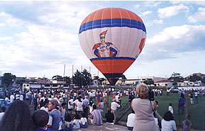
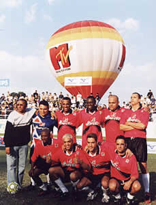
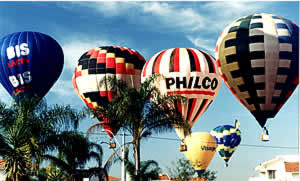
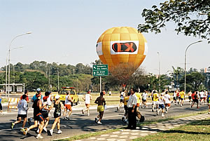
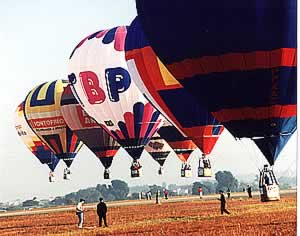
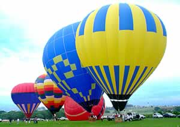

Balonismo e suas aplicações comerciais em propagandas e promoções
Um impacto visual forte de seu produto ou serviço garante a permanência por mais tempo na lembrança de seus consumidores, um balão de ar quente cria esta conexão em uma atmosfera de romantismo que atrai e detém a atenção. Imagine então o poder da sua marca em um enorme balão com a altura de um prédio de 10 andares criando um envolvimento emocional com seus consumidores.
Balonismo uma mídia ecologicamente correto
Os baixíssimos níveis de ruído e consumo de gás fazem do balonismo um veículo ecologicamente correto, pois da queima do seu gás a resultante é a água. No balonismo sua mensagem é nítida, podendo ser observado de grandes distâncias, sendo facilmente notada pelo grande público voando a baixa altura e sobre grandes aglomerações. de marketing. No balonismo os translados são muito ágeis podendo atender várias promoções em curto espaço de tempo e cobrindo grandes distâncias, com apenas 2 elementos e um veiculo na equipe de balonismo para toda a operação promocional.
Campanhas Promocionais
Associado a outras mídias de propaganda como jornais, televisão ou rádio, balões podem rapidamente trazer-lhes um retorno publicitário imediato gerando matéria jornalística de interesse público pois a prática do balonismo ainda não é muito difundida, ficando restrita a uns poucos locais. Nos trabalhos realizados pela nossa equipe de balonismo sempre obtivemos o retorno do investimento do cliente, com editoriais em jornais revistas e rádios bem como a participação em programas de entrevistas com os pilotos e abertura ou fechamento de jornais locais. Nossos clientes sempre se surpreendem com os constantes convides de Prefeituras em eventos locais, promotores de eventos e grandes shows para a participação do balão como uma atração a mais disponibilizando espaços publicitários para a divulgação de sua promoção. O balão passa a ter a imagem associada a marca do patrocinador, marca essa que também poderá estampada nos uniformes da equipe de balonismo e veículos. Em campanhas de curta duração utilizam-se balões com faixas, já para campanhas mais completas onde envolvam várias cidades e participação em campeonatos e festivais de balonismo o ideal é a construção de um balão com o tamanho ideal para as ações que estão sendo propostas e a logotipia da campanha.
Algumas das ações promocionais do balonismo.
Voo Livre de balões
No voo livre o balão sobrevoa cidades, campos, feiras e eventos podendo transportar clientes, fornecedores, como premiação de concursos ou compra ou autoridade de interesse do patrocinador, sendo uma grande oportunidade para ampliação de novas fronteiras comerciais e divulgação de sua marca e promoção junto ao público tudo ao mesmo tempo.
Voo cativo de balão
Nesse tipo de promoção o balão fica amarrado por cordas com até 50 metros de altura, em um lugar de interesse do cliente, podendo nesse período levar até 80 passageiros por hora com a possibilidade ser sorteado a passagem para promover a marca ou produto, festas de fim de ano, confraternização de funcionários e convenções podendo também se apresentar durante a noite pois o balão dispõe de sistema especial de iluminação noturna que pode se destacar em qualquer evento pois sua iluminação pode ser vista de grandes distâncias, neste caso o espaço necessário é de aproximadamente 50 x 50 metros de área isolada, livre e desimpedida de veículos, construções, postes de iluminação e fios para realização do voo cativo com segurança e os ventos não devem ser maiores que 10 km/h.
Campeonatos e Festivais de Balonismo
Participação de Campeonatos Nacionais ou Festivais de Balonismo onde costumam encontrar-se mais de 30 balões, nacionalmente acontecem de 6 a 8 eventos por ano, o balão pode aparecer em grandes eventos, tais como corridas de automóveis, show aéreos, eventos desportivos, rodeios. Com a opção de escolher um evento que seja o seu público-alvo, sua marca terá uma grande exposição publicitária pois o balão se destacará facilmente como novidade com grande presença do púbico e da mídia, imagine a promoção de um novo produto ou uma ação de relações públicas num festival de balões ou evento desportivo.
Turismo de Incentivo com balões
Outdoor Training
As pessoas se arriscam, lançam novas ideias, e saem da rotina, se permitem sensações e emoções até então nunca vivenciadas em sua vida profissional, lidar com dificuldades como a pequena autonomia ou a falta de um sistema de direcionamento de voo, conhecimentos sobre logística e orientação de voo, ventos e meteorologia são alguns dos pontos que podemos compartilhar com o grupo. Durante a atividade os participantes sentem um pouco das dificuldades e aprendam com isso. A experiência de viagem possibilita um vasto aprendizado por analogias, ou seja, vivências de situações semelhantes àquelas do ambiente de trabalho (estresse, escassez de recursos materiais e financeiros, etc.), podendo haver criação de conhecimentos que auxiliem na forma de avaliar as adversidades do mundo corporativo, obtendo-se soluções criativas e desenvolvendo-se novas competências. Soma-se a isso, a ampliação da rede de contatos (networking).
Vale voo de balão vouchers
Oferecer passeio em balão para clientes corporativos, fornecedores, funcionários é uma ferramenta poderosa de aproximação. Estudos que medem o impacto dos programas de incentivos indicam que os prêmios em dinheiro são considerados pelos colaboradores até no máximo um ano, carros e outros bens duráveis têm recall de aproximadamente quatro anos, enquanto que as viagens permanecem “vivas” na memória do beneficiado por até doze anos . Afinal, viagens rendem fotos, histórias divertidas, filmes, etc.
Custos e Benefícios do Balonismo
Do ponto de vista dos diretores e sócios das companhias, um programa de incentivos não acarreta despesas, pois é autofinanciável, ou seja, os recursos necessários para sua implantação e desenvolvimento provêm de uma pequena parcela dos lucros ou economias a serem geradas por ele mesmo, deixando ainda um resultado altamente positivo para a empresa. Um estudo realizado pela SITE – Society of Incentive & Travel Executives, associação mundial de pesquisa e educação na área de incentivos, mostra que 92% dos trabalhadores pesquisados revelaram ter atingido suas metas graças aos programas de incentivos, enquanto que 57% das empresas pesquisadas relataram ter atingido ou ultrapassado suas metas. O mesmo levantamento revelou que os programas de incentivo podem melhorar o desempenho individual do funcionário em 27% e nas equipes, em cerca de 45% .
Mas lembrem-se
Muitos pilotos sonham em encontrar um patrocinador para custear o seu esporte, mas não se dão conta que o esporte do balonismo e publicidade são coisas muito distintas e da incrível quantidade de trabalho que envolve o desenvolvimento de uma campanha publicitária bem sucedida, e de toda logística que envolve um bom projeto.
Atualizado em: Novembro 12, 2014